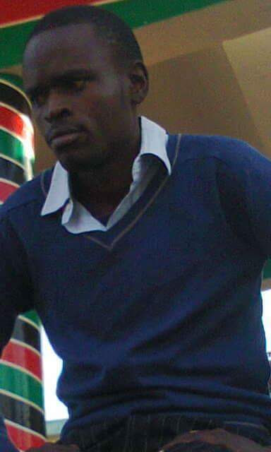

Philip Ongore Wafula | WDD 130
I am a passionate web developer with a strong interest in creating engaging and user-friendly websites. I enjoy learning new technologies and constantly improving my skills to deliver high-quality projects. In my free time, I love to explore the outdoors and spend time with friends and family.